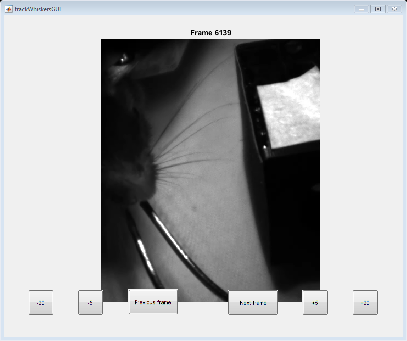

Get Neighboring Frames
used for DLC, where whisker identification is uncertain Sacha McElligott 09.09.2019
Contents
Initialization
close all; clear all; clc;
Select data to pull
pathRoot = 'Z:\data\HS\avi\'; try mouse = input('Which mouse?: ','s'); catch % demo if input isn't given mouse = 'cb141'; end path = strcat(pathRoot,mouse); files = dir(path); alphabet = lower('ABCDEFGHIJKLMNOPQRSTUVWXYZ'); for i = 3:length(files) disp(' ') disp(strcat(num2str(i-2),') ',files(i).name)); videoFiles = dir(strcat(path,'\',files(i).name,'\*.avi')); for j = 1:length(videoFiles) disp([' ' alphabet(j) ') ' videoFiles(j).name]) end end try n = input(['Which data would you like to analyze? (ex: 3b)' newline '--> '],'s'); catch % demo if input isn't given n = '5b'; end
1)20171128
a) 20171128_cb141_001.avi
b) 20171128_cb141_002_mako_Start 2017-11-28 14.17.43.663.avi
c) 20171128_cb141_003_mako_Start 2017-11-28 14.31.01.747.avi
d) 20171128_cb141_004_mako_Start 2017-11-28 14.46.50.894.avi
2)20171129
a) 20171129_cb141_002_mako_Start 2017-11-29 21.43.20.331.avi
b) 20171129_cb141_003_mako_Start 2017-11-29 21.57.23.710.avi
c) 20171129_cb141_004_mako_Start 2017-11-29 22.10.53.851.avi
d) 20171129_cb141_005_mako_Start 2017-11-29 22.23.47.465.avi
e) 20171129_cb141_006_mako_Start 2017-11-29 22.37.06.031.avi
f) 20171129_cb141_007_mako_Start 2017-11-29 22.50.45.790.avi
g) 20171129_mako_Start 2017-11-29 21.29.52.662.avi
3)20171130
a) 20171130_cb141_001.avi
b) 20171130_cb141_002_mako_Start 2017-11-30 15.12.16.470.avi
c) 20171130_cb141_003_mako_Start 2017-11-30 15.25.50.531.avi
d) 20171130_cb141_004_mako_Start 2017-11-30 15.39.36.028.avi
e) 20171130_cb141_005_mako_Start 2017-11-30 15.54.29.333.avi
4)20171204
a) 20171204_cb141_001.avi
b) 20171204_cb141_002_mako_Start 2017-12-04 16.40.13.159.avi
c) 20171204_cb141_003_mako_Start 2017-12-04 16.53.32.189.avi
d) 20171204_cb141_004_mako_Start 2017-12-04 17.59.16.813.avi
e) 20171204_cb141_005_mako_Start 2017-12-04 17.19.24.514.avi
f) 20171204_cb141_006_mako_Start 2017-12-04 17.32.53.508.avi
g) 20171204_cb141_007_mako_Start 2017-12-04 17.46.15.230.avi
h) 20171204_cb141_008_mako_Start 2017-12-04 17.59.16.813.avi
5)20171208
a) 20171208_cb141_001.avi
b) 20171208_cb141_002_mako_Start 2017-12-08 14.30.14.884.avi
c) 20171208_cb141_003_mako_Start 2017-12-08 14.43.31.658.avi
d) 20171208_cb141_004_mako_Start 2017-12-08 14.57.16.222.avi
e) 20171208_cb141_005_mako_Start 2017-12-08 15.10.08.144.avi
6)20171209
a) 20171209_cb141_001.avi
b) 20171209_cb141_003_mako_Start 2017-12-09 13.22.32.915.avi
c) 20171209_cb141_005_mako_Start 2017-12-09 13.51.04.912.avi
d) 20171209_cb141_006_mako_Start 2017-12-09 14.06.09.702.avi
e) 20171209_cb141_007_mako_Start 2017-12-09 14.19.00.569.avi
f) 20171209_cb141_008_mako_Start 2017-12-09 13.36.29.284.avi
g) 20171209_cb141_009_mako_Start 2017-12-09 14.44.08.500.avi
7)Thumbs.db
8)other
Pull data
if length(n) > 2 c = 1; dateID = str2num(n(1:2))+2; else c = 0; dateID = str2num(n(1))+2; end for i = 1:length(alphabet) if strcmp(alphabet(i),n(c+2)) videoID = i; end end videoFiles = dir(strcat(path,'\',files(dateID).name,'\*.avi')); global obj; obj = VideoReader(strcat(path,'\',files(dateID).name,'\',videoFiles(videoID).name)); numFrames = obj.Duration*obj.FrameRate; global frameID; try frameID = input(['Which frame number? (max = ' num2str(numFrames) '): ']); catch % demo if input isn't given frameID = randi(numFrames); end
Display data
trackWhiskersGUI